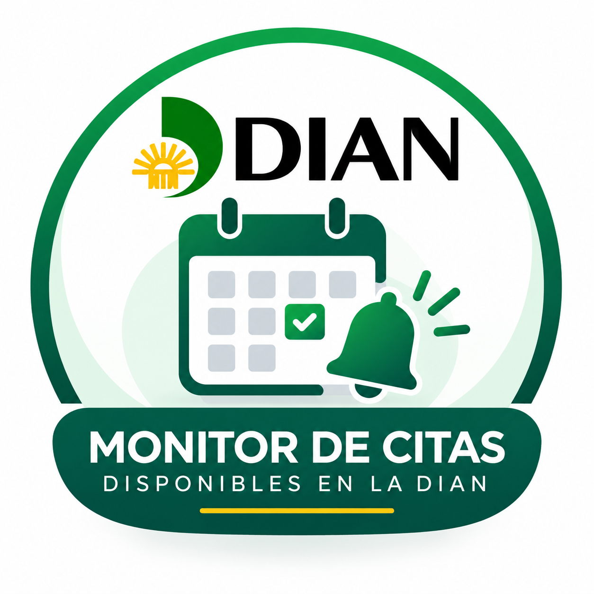

Consulta disponibilidad
Revisa únicamente las opciones que el portal de la DIAN muestra públicamente.

Radar Citas DIAN Servicio independienteAlertas gratuitas en Telegram
El radar consulta la disponibilidad publicada por la DIAN para el trámite de devoluciones en modalidad virtual y avisa en nuestro canal cuando detecta nuevas opciones.
Unirme al canal de TelegramSimple y útil
Revisa únicamente las opciones que el portal de la DIAN muestra públicamente.
Identifica cuándo aparecen o cambian las citas virtuales para devoluciones.
Envía un mensaje al canal para que puedas consultar directamente el portal oficial.
No somos un sitio oficial. Este proyecto es independiente y no está afiliado, autorizado ni administrado por la DIAN.
No agendamos citas. Solo compartimos alertas y redirigimos al usuario al portal oficial para continuar el proceso.
No garantizamos disponibilidad. El monitor funciona normalmente entre las 8:00 a. m. y las 5:30 p. m., mientras el equipo que lo ejecuta permanezca encendido y conectado.
La DIAN es la fuente oficial. Horarios, requisitos, disponibilidad y cualquier información adicional deben verificarse directamente allí.
Mantente informado
Únete al canal para conocer las opciones detectadas por el radar.
Unirme al canal de Telegram